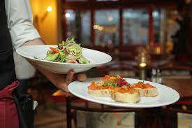

Welcome to House of Foodies Restaurant, where every dish tells a story and every bite is an experience. Nestled in the heart of Lahore, our restaurant is a culinary haven, offering a fusion of flavors that will tantalize your taste buds and leave you craving more.
At House of Foodies, we believe in the power of good food to bring people together. Whether you're joining us for a romantic dinner for two, a lively gathering with friends, or a special celebration, our warm and inviting atmosphere sets the perfect stage for unforgettable moments.
Our menu is a celebration of fresh, locally sourced ingredients and global inspiration. From savory starters to mouthwatering mains and decadent desserts, each dish is crafted with care by our talented team of chefs, who are passionate about creating culinary masterpieces that delight and surprise.But it's not just about the food it's about the experience. Our attentive staff is dedicated to providing exceptional service, ensuring that every visit to House of Foodies is nothing short of extraordinary.
We also providing the outdoor or indoor table and also providing the facilities like buffy, birthday parties.
Whether you're a seasoned foodie or simply looking for your new favorite dining spot, we invite you to join us at House of Foodies and embark on a culinary journey like no other. Come taste the difference and discover why we're more than just a restaurant we're a destination.


Book your table today and let us indulge your senses. We can't wait to welcome you to House of Foodies!